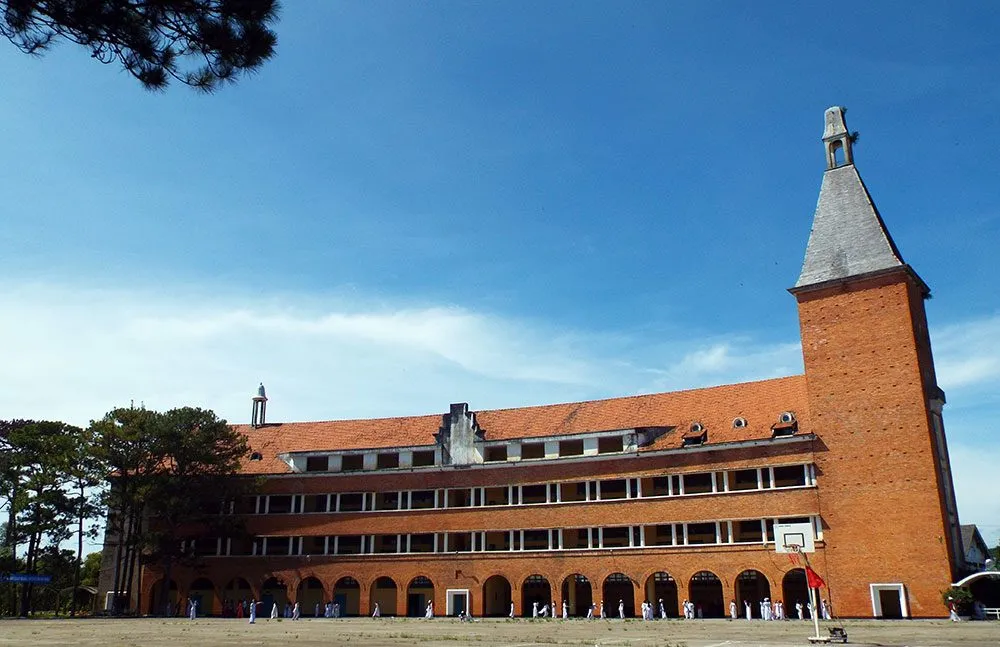
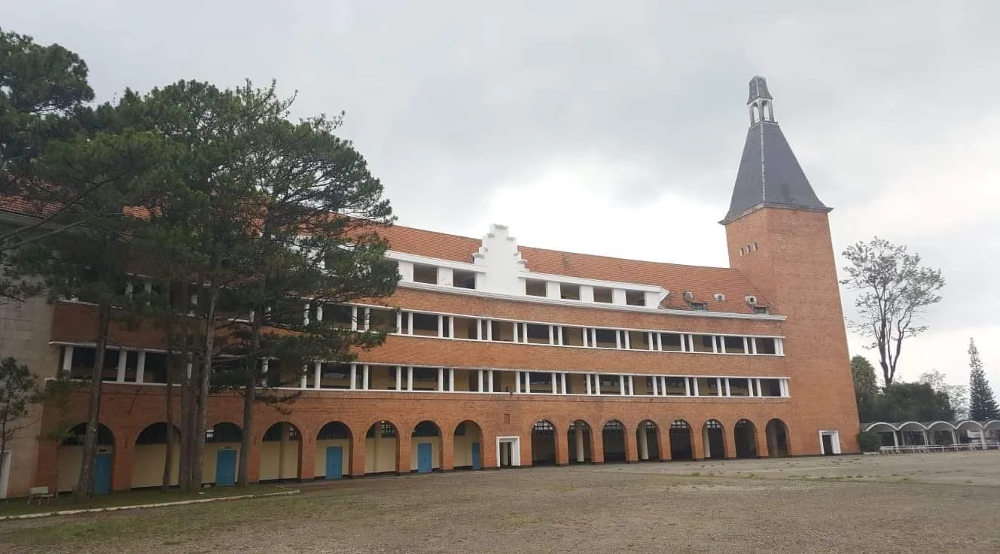
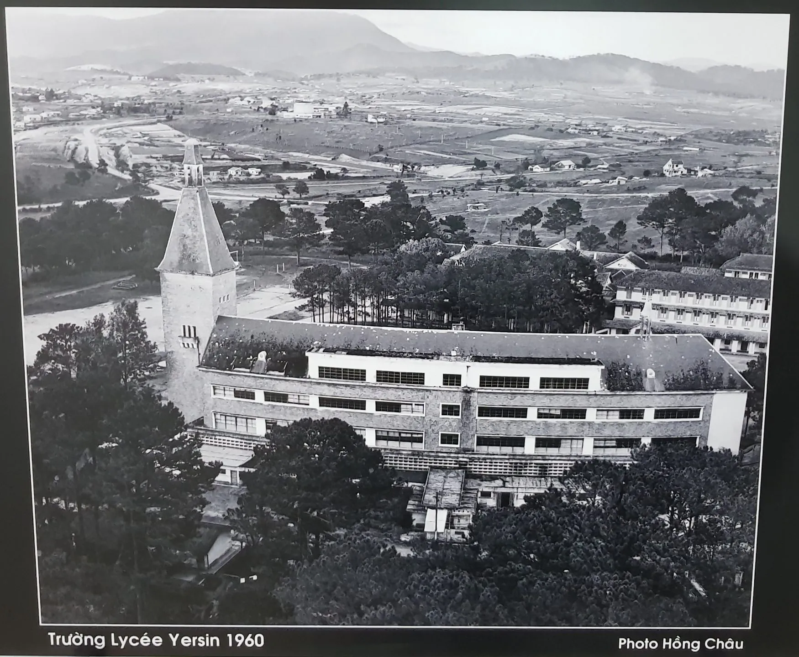
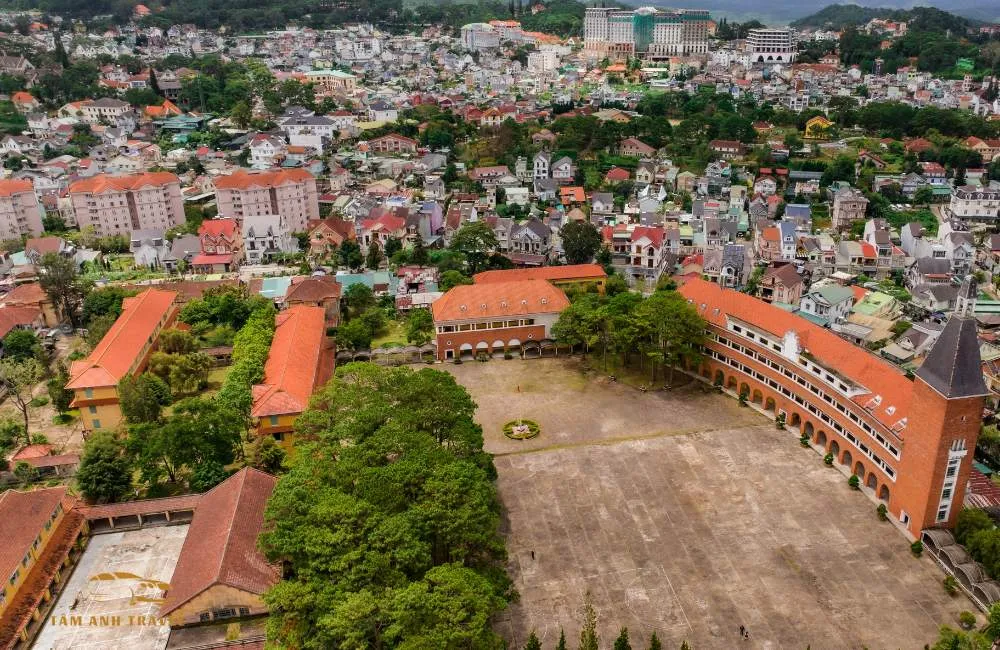

Explore Da Lat Pedagogical College - Impressive ancient architecture

Table of Contents
- 1. Overview review of Da Lat College of Education - The "fever" school in the heart of the mountain town
- 2. Da Lat College of Education - A journey of nearly 100 years of history and unique architecture
-
3. All the interesting things about Da Lat College of Education that you may not know
- 3.1. The ancient architectural beauty mixed with French romance of Da Lat College of Education
- 3.2. Da Lat College of Education's arc-shaped lecture hall - a book of knowledge in the heart of the city
- 3.3. Bell tower of Da Lat College of Education - A proud symbol in the sky of Da Lat
- 3.4. The courtyard of Da Lat College of Education is large - an outdoor living space with a European feel
- 3.5. Rows of buildings imbued with European architecture of Da Lat College of Education in the heart of the foggy city
- 4. Is Da Lat College of Education open to visitors?
- 5. Visit Xom Leo Grill & Chill - "Recharge your batteries" after the journey to explore Da Lat College of Education
Are you ready for an inspiring visit to a dreamlike school in the heart of Da Lat? Today, let's "travel" to *Da Lat Pedagogical College* - a place not only famous for its unique architecture but also an extremely hot check-in spot sought after by young people. Surely this journey will bring you many interesting surprises. What are you waiting for? Grab your backpack and explore with me right away!
Although not too large, every small corner of the school campus bears the mark of time, from the rows of classrooms built of ancient red bricks to the cool green yard shaded by old pine trees. In particular, the main building with its unique curved dome is an architectural highlight that makes everyone who comes here admire it. Standing in that quiet and nostalgic space, you will feel like you are lost in an old movie in the heart of a foggy city.
1. Overview review of Da Lat Pedagogical College - A "fever" school in the heart of the mountain town
Address:29 Yersin, Ward 10, Da Lat City, Lam Dong Province
Located on peaceful Yersin street, just over 2km from the center of Da Lat, Da Lat Pedagogical College has long become a favorite destination of many tourists, especially young people. With classic French-style architecture and cool, airy green space, this place is like an ideal "outdoor film studio" for those who love virtual photography. Every corner of the school can become a "genuine" photo frame, so you just need to raise your camera to get a beautiful photo.
A big plus point is that the school is completely free of charge for visitors. However, to ensure security and preserve common space, you will need to present identification documents such as ID card or citizen identification card at the security gate. Rest assured that when you leave, you will be picked up right away!
With an easy-to-find location and convenient transportation, you can get to school by motorbike or car. Popular routes often chosen by many people are: From the city center - follow Ho Tung Mau - Tran Quoc Toan - turn to Yersin. Then, run straight for about 800 meters and you will see the outstanding school appear right before your eyes. In addition, if you don't know the way, you can absolutely ask people for directions - Da Lat people are very friendly so don't be afraid to ask!
2. Da Lat College of Education – A journey of nearly 100 years of history and unique architecture
Da Lat Pedagogical College is not only a famous destination in the foggy city, but also one of the architectural works with a long history. The school was built in 1927, designed by French architect Moncet, initially to serve French children and upper-class families in Vietnam during that period.
After a period of operation, the school was taken over by the Kon Tum Bishopric to use as a training place for seminarians. Over nearly a century, the school has constantly changed and developed, and went through four name changes before officially taking on its current name.
Previously, the school was called Petit Lycée Da Lat, then changed to Grand Lycée de Da Lat, then Grand Lycée Yersin– to commemorate Dr. Alexandre Yersin, who made many contributions to Vietnamese medicine and science. It was not until later that the name Da Lat Pedagogical College was officially used and maintained to this day.
Not only is it a place to train teachers, the school is also a national architectural monument, and is honored to be recognized by the World Association of Architects (UIA) as one of the 100 most typical architectural works in the world of the 20th century. Outstanding architecture with curved red tile roofs, rows of bare brick classrooms and a unique arc-shaped building have turned this place into a must-see stop when coming to Da Lat.
3. All the interesting things about Da Lat College of Education that you may not know
3.1. The ancient architectural beauty mixed with French romance of Da Lat Pedagogical College

Few people would expect that in the heart of Da Lat, there exists a project bearing the mark of European architecture like the Da Lat Pedagogical College. Built mainly from materials imported from France, the school stands out with a sloping roof covered with blue-black lithograph tiles, red exposed brick walls, and matching orange brick skylights.
Over time, some details such as tiled roofs and walls have undergone slight changes to suit conservation needs. However, the overall architecture is still preserved almost intact, like a "historical witness" quietly witnessing the ups and downs of the foggy city.
One unfortunate thing is that the bell tower, an architectural highlight on the arc-shaped building, is no longer in its original state. The ancient clock once mounted on the tower was gone, and in its place was a sunken brick space that looked like a trace of time.
3.2. The lecture hall *Da Lat College of Education* has an arc shape - a book of knowledge in the heart of the city

The school's main lecture hall is a unique and rarely seen architectural work. The building is designed in an arc shape, extending about 77m on the front and 90m on the back, with three floors divided into 24 classrooms.
The arc shape is not only aesthetic but also symbolizes an open book, expressing the spirit of learning and the desire to reach knowledge of many generations of students. This design has contributed to creating a special academic atmosphere - both ancient and inspiring.
3.3. Bell tower*Da Lat Pedagogical College*– A proud symbol in the sky of Da Lat

Located at the end of the lecture hall is the 54m high bell tower, a work once considered a symbol of French culture in Da Lat. Roofed with lithograph tiles and with a blend of classic and modern appearance, the bell tower exudes a charming romantic beauty, reminding many people of castles in Europe.
There was a time when people could climb to the top of the tower to see the panoramic view of the misty city stretching out into the distance. However, currently the entrance to the tower has been locked for safety reasons. However, just standing from the yard below, you can feel the majesty and poetry of this project - like a hand reaching up to embrace the whole sky of Da Lat.
3.4. The school yard of *Da Lat Pedagogical College* is large - an outdoor living space with a European feel

Right in the middle of the school campus is a large yard - not simply a place for physical training for students, but also the heart of the entire school. This is a regular venue for extracurricular activities, sports and physical education.
The highlight of this area is the green pine trees planted along the paths, creating the feeling of entering a university campus in the heart of Europe. The green color of the foliage combined with the fresh air typical of Da Lat makes this place always bring a relaxing and pleasant feeling to both students and visitors.
3.5. Rows of houses imbued with European architecture of *Da Lat Pedagogical College*in the heart of the foggy city

In addition to the main arc-shaped lecture hall, on the campus there are also many rows of houses built synchronously with each other, from two to three floors high. These buildings stand out with warm orange-yellow tones, characteristic red tile roofs and blue-painted wooden windows, both harmonious and creating unique architectural highlights.
The rows of houses are designed simply but delicately with the base of the ground walls being arcade-shaped brick columns, giving a classic feeling but not at all heavy. The corridor connecting the blocks uses a system of double white painted columns, which not only helps the space feel airy but also creates a soft rhythm in the overall layout.
What's interesting is the mixture of architectural styles between Switzerland and France in each area: if the classrooms, administration, laboratories... have the lines of Swiss architecture with solidity and neatness, the hall area, principal's office or rest house have many characteristics of previous French schools, with tilted tile roofs and elegant, romantic structures.
4. Is Da Lat College of Education open to visitors?
Although it is one of the prominent destinations in the list of impressive architectural works in Da Lat, Da Lat Pedagogical College is not open to visitors**.
Previously, the school used to be a familiar stop for many tourists, especially young people who loved the ancient space and the art of photography. However, due to the increasing number of visitors, uncontrolled visits have significantly affected the campus landscape as well as the learning and teaching activities of students and lecturers.
For that reason, from April 2019, the school has issued a notice to temporarily stop welcoming visitors. The main goal is to protect ancient architecture, ensuring that the internal learning and living environment takes place normally and without disturbance.
5. Visit Xom Leo Grill & Chill Shop - "Recharge your batteries" after the journey to explore Da Lat Pedagogical College
After wandering around admiring the ancient beauty of Da Lat Pedagogical College - a symbol of French architecture in the heart of the mountain town - what could be better than finding a cozy, relaxing space to rest and enjoy typical cuisine of the cold country?
*Xom Leo Grill & Chill Shop* is the ideal choice for you to stop and "recharge" after an inspiring exploration.
🔥The space is typical of Da Lat - cozy but no less personal
Located on Huynh Tan Phat Street, Ward 11, not too far from the center, the restaurant brings a close, rustic feeling amid the chilly atmosphere typical of the plateau. With a layout imbued with a "gentle chill" spirit, this place is suitable for sitting around with friends, eating, chatting and relaxing after a journey to explore the city.
🥢Aromatic grilled dishes - Rich flavors that you will never forget
The menu here is rich with many attractive grilled dishes, especially meats marinated in their own style, typical of Da Lat. Served with fresh green vegetables and "hearty" dipping sauce, each dish makes the taste buds explode. Whether you want to eat a full meal or simply enjoy a few dishes to warm your stomach, the restaurant still has enough suitable options.
🧑🍳Friendly service - True Da Lat hospitality
A big plus point that diners will never forget is the enthusiasm and thoughtfulness of the staff. From the moment you enter the restaurant to the moment you leave, you will always feel welcomed like a relative you have met after a long time - a cute feature that is very "Da Lat".
📌Contact information:
-
Address: 113 Huynh Tan Phat, Ward 11, Da Lat
-
Hotline: 076.45.27.336 – 0899.42.8434 – 0902.91.2240
-
Reserve Table:*Here*
-
Google Map:*View on map*
📍Small note: If you want a nice seat with a chill corner overlooking a romantic view, come early - especially on evenings or weekends!
After a day of exploring the ancient beauty and European architecture at Da Lat Pedagogical College, don't forget to reward yourself with a cozy dinner at Xom Leo Grill & Chill Shop - the ideal place to end an inspiring journey in the heart of the mountain town. The gentle chill space, fragrant grilled dishes and the friendliness of Da Lat people will definitely bring you a complete and memorable experience on this trip.